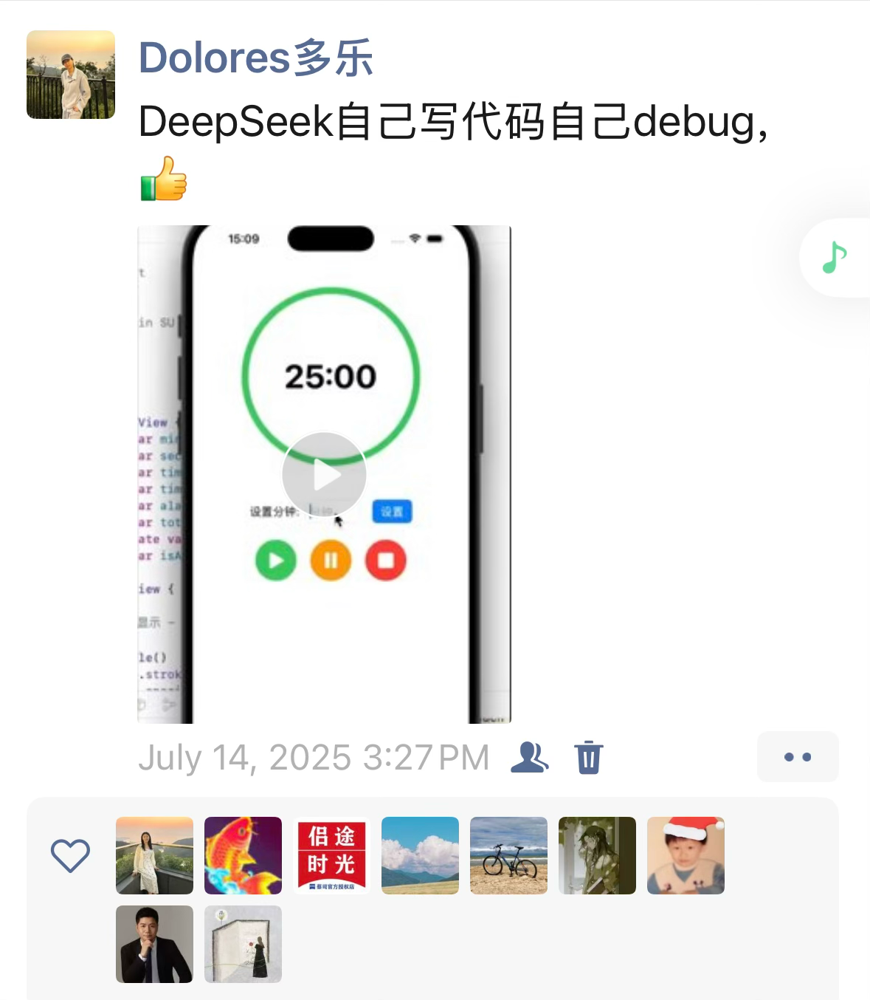
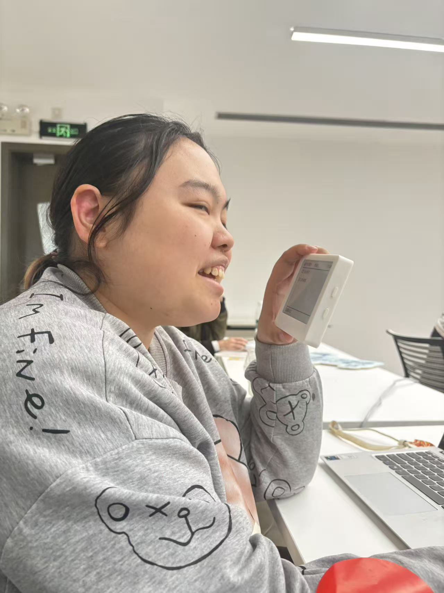
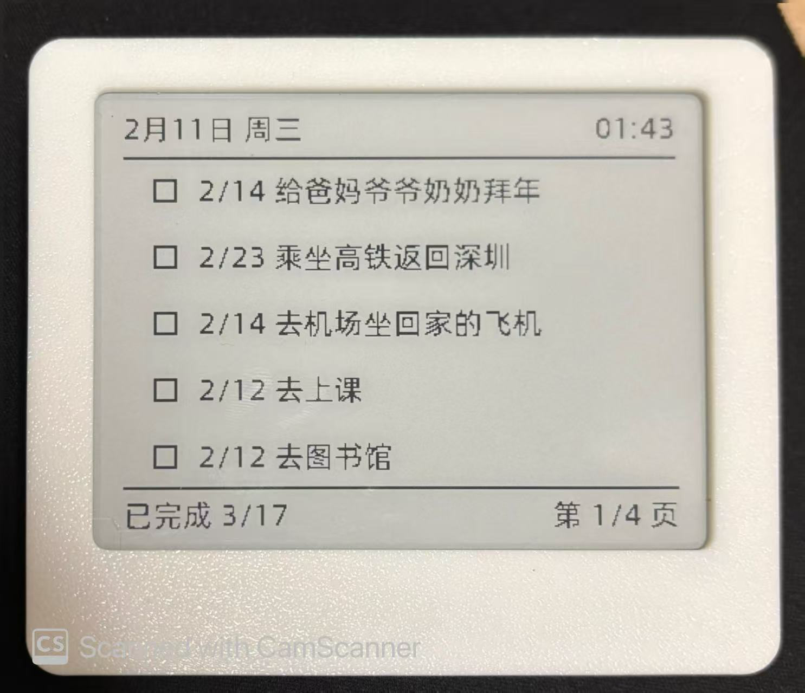
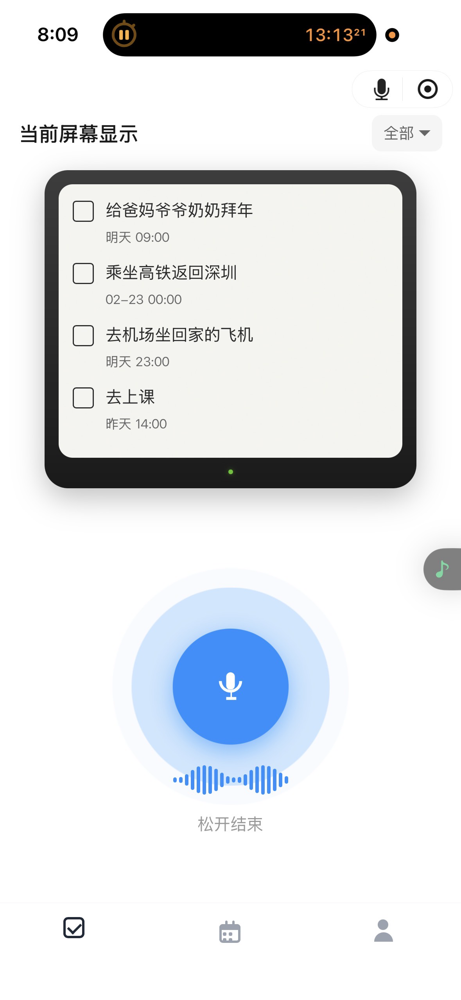
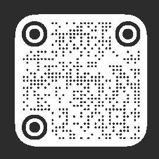

从大厂裸辞后
如何用AI重塑工作
成为"超级个体"
多乐 Dolores
港中大(深圳)金融硕士 · 前大厂产品经理 · 万人 AI 社群活动主理人 · AI智能硬件创业者
Contents
01
起因 · 困在系统里
三级 battle · PUA · 迷惑操作
02
转折 · 想好了就走
知行合一
03
觉醒 · 读到 Naval 的那一刻
四种杠杆 · AI = 最大杠杆
04
行动 · 成为超级个体
用AI重塑工作 · 一个人 = 一支队伍
05
现在 · 好的与真实的
VoInko · 头铁
06
感悟 · 每条路都 make sense
约束条件 · 目标函数
01
起因 · 困在系统里
大厂日常
"我带着我老板
还有我老板的老板
三个级别的人
跟对方三个级别的人
battle
"
01
起因 · 困在系统里
迷惑操作
一个岗位
两个人
完完全全平级 · 没有分工
这俩人还闹矛盾，互相不通气
01
起因 · 困在系统里
"以前身边都是
批评
的声音
我也没得选择"
02
转折 · 想好了就走
知行合一
"如果有人来问你该不该离职
那说明他没想好，答案就是不要离职"
"真正想好的人，就是会立刻去行动"
03
觉醒 · 读到 Naval 的那一刻
GAP
读了很多书
其中一本，振聋发聩——
《纳瓦尔宝典》
03
觉醒 · 读到 Naval 的那一刻
Naval 的
四种杠杆
劳动力
雇人帮你干活
资本
用钱生钱
代码
24小时帮你工作
媒体
无限次传播
传统杠杆门槛高 → 新杠杆
不需要许可
03
觉醒 · 读到 Naval 的那一刻
AI 又是劳动力 · 又能写代码 · 又能做媒体
AI
= 这个时代的
最大杠杆
04
行动 · 成为超级个体
用AI
重塑工作
层面一
根据 Naval 的理论
定制独一无二的工作
层面二
用 AI 工具
打造自己的工作流
信息的输入与输出
04
行动 · 成为超级个体
7.14
用 Deepseek 自己写代码、自己 debug
做出了一个
iOS 番茄钟 APP

📱
请放入 assets/tomato-app.png
04
行动 · 成为超级个体
"每天打开电脑
觉得自己好像是一个"
Magician
04
行动 · 成为超级个体
超级个体
不是什么都自己干的人
而是
能借助工具放大自己能力
的人
产品经理
交互设计
前端开发
媒体运营
"一个人能把想法推进到可以拿出来给别人看的程度"
04
行动 · 成为超级个体
能量调动
60
%
以前上班
→
100
%
现在
05
现在 · 好的与真实的
VoInko
跟合伙人 · 一个月 · 手搓AI智能软硬件

 
墨水屏 + 手机APP · 语音录入待办与灵感
05
现在 · 好的与真实的
诚实的现在
✓ 好的
这辈子最想做的事情
可以选择跟舒服的伙伴合作
时间好像被加速了
✗ 真实的
还没有稳定现金流
偶尔还是会焦虑
爸妈不一定完全理解
05
现在 · 好的与真实的
"我这种非常
头铁
的行为
不一定适合每一个人"
06
感悟 · 每条路都 make sense
一个实验
让 AI 扮演名人给你建议？
它会
谄媚
你
"你不是不够好，而是外部环境有问题"
"你让 AI 不要谄媚你
用尖锐的观点来回复你"
他就会变成另一副嘴脸
06
感悟 · 每条路都 make sense
这世界上千万条路
每条路都 make sense
前提是你要知道你的
约束条件
和
目标函数
06
感悟 · 每条路都 make sense
做个勇敢的人
允许一切发生
谢谢
我会持续记录一个人用 AI 搞事情的过程
踩过的坑、用过的工具、真实的感受
Dolo多乐的AI笔记
📱
assets/qr-personal.png
'">
公众号
📱
assets/qr-xiaohongshu.png
'">
小红书
📱
assets/qr-voInko.png
'">
VoInko 公众号
1 / 21
← → 翻页 ｜ G + 数字 跳页 ｜ F 全屏
‹
›